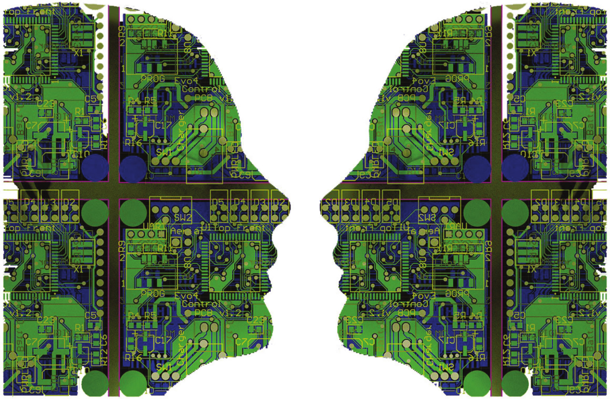
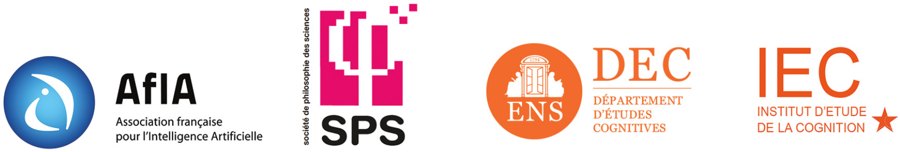

L'IA comme épistémologie expérimentale : regards sur 40 ans d'histoire
Par
Joël Quinqueton,
Professeur émérite de l'Université de Montpellier III, Laboratoire d'Informatique, de Robotique et de Microélectronique de Montpellier
Télécharger la présentation
En 40 ans, l'Intelligence Artificielle est passée du statut de curiosité futuriste pour informaticiens à celui d'être artificiel pensant dont les performances suscitent parfois la crainte. Elle apparaît assez naturellement comme susceptible de mettre en œuvre une démarche épistémologique, mais l'a-t-elle vraiment fait, et comment ? Après 40 ans d'observation active de domaines comme l'apprentissage automatique et plus généralement le raisonnement sur ce qui est plausible ou vraisemblable, je m'efforcerai de proposer quelques éléments de réponse.
GOFAI, NEWFAI et le problème de l'intentionnalisme
Par
Jean-Michel Roy,
Professeur à l'École normale supérieure de Lyon et à l'École normale supérieure de l'Est de la Chine
La Good Old Fashion Artificial Intelligence, légitimement considérée comme une application des principes généraux de la conception cognitiviste de la cognition, s'est heurtée à diverses limitations désormais bien établies et renvoyant à un certain nombre de problèmes de fondements autour desquels s'est cristallisé le débat philosophique contemporain sur l'intelligence artificielle. Parmi eux figure au premier chef celui de la capacité de cette dernière à artificialiser la propriété d'intentionnalité considérée par la majorité des théories des facultés mentales depuis le dernier quart du XIX siècle (cf. en particulier Franz Brentano 1874), y compris celles issues de la Révolution Cognitive des années 50, comme une marque essentielle du mental. Les plus célèbres arguments critiques déployés à cet effet sont ceux de Hubert Dreyfus et de John Searle. Ils jouèrent un rôle actif dans le processus d'émergence de ladite Newfound Artificial Intelligence, autour de laquelle s'est progressivement ralliée une grande partie du domaine de l'intelligence artificielle. Cette évolution cruciale d'une approche GOFAI à une approche NEWFAI peut être considérée comme une facette particulière de la transformation plus générale de ses principes fondamentaux qu'a connue l'entreprise cognitive contemporaine, et qui l'a conduite du cognitivisme à la perspective désormais couramment dénommée 4E. La question se pose donc de savoir si, et le cas échéant comment et avec quel succès, l'approche NEWFAI, et partant d'une certaine manière l'approche 4E dans laquelle elle s'inscrit, a résolu le problème de l'artificialisation de l'intentionnalité. Telle est celle qui sera examinée ici.
Le rôle de la complexité et de la simplicité dans l'émergence des capacités cognitives
Par
Jean-Louis Dessalles,
Professeur à Télécom ParisTech, Université Paris-Saclay, Laboratoire Traitement et Communication de l'Information
Télécharger la présentation
Les espèces animales se distinguent les unes des autres par des caractéristiques remarquables. Notre cognition fait certainement de nous des primates atypiques. Peut-on caractériser ce que nous appelons notre intelligence, et comment se fait-il qu'elle ait émergé dans notre lignée ? Turing a défini l'intelligence comme la capacité à être pertinent dans le dialogue. La pertinence est une exigence forte que nous imposons à nos congénères pour établir des liens sociaux. Ceux qui ne sont pas pertinents sont ignorés, voire exclus. Je montrerai comment les notions de complexité et de simplicité permettent de cerner la notion de pertinence, en ouvrant la voie vers sa reproduction par des machines. Cette démarche permet de poser en des termes nouveaux la question : pourquoi sommes-nous dotés de cette forme si particulière de cognition ?
D'une intelligence artificielle à une intelligence incarnée dans l'activité humaine
Par
Catherine Garbay,
Directrice de recherche au CNRS, Laboratoire d'Informatique de Grenoble
Télécharger la présentation
Mon point focal pour cet exposé est celui de la constitutivité technique de la cognition. Au-delà du couplage entre l'instrument et l'activité humaine, je souhaite questionner comment l'expérience humaine, l'histoire singulière du sujet, se développent et se construisent dans l'activité médiée par un instrument. Au plan technique, je propose comme champ d'analyse celui de l'intelligence ambiante. Il s'agit d'une classe d'instrument particulière, susceptible d'apporter un éclairage pertinent et une forme de renouveau à ces questions, en raison de ses relations étroites au champ de l'Intelligence Artificielle et de ses développements technologiques très récents. A partir d'un rappel des propriétés principales de cet instrument, je me propose d'interroger les formes de couplage humain-technique qu'il engendre, ses limites et ses évolutions. La « qualité de l'expérience humaine » est ici analysée sous l'angle de plusieurs propriétés, comme le rapport au réel, l'autonomie, ou la construction du sens. À partir de ces constats, j'évoquerai quelques lignes d'évolution de ce champ scientifique qui me semblent importantes dans la perspective d'un meilleur couplage entre l'instrument et l'expérience singulière de l'humain.
Intelligence artificielle et « cognition 4E » : un changement de paradigme ?
Par
Pierre Steiner,
Enseignant-chercheur à l'Université de technologie de Compiègne, Laboratoire Connaissances, Organisations et Systèmes Technique
Télécharger la présentation
Quelle est la pertinence et quelles sont les limites du concept de « paradigme », fréquemment mobilisé aujourd'hui pour décrire les transformations contemporaines des sciences cognitives et de l'intelligence artificielle ? Qu'il s'agisse d'un proto-paradigme ou d'un ensemble de programmes de recherche hétérogènes, qu'est-ce que la « cognition 4E » ? Je répondrai à ces questions en insistant notamment sur la diversité des conceptions de l'embodiment que l'on peut retrouver au sein de cette nébuleuse « 4E », avant d'aborder la question suivante : une prise en compte des dimensions « incarnées », « situées », « étendues » et « énactives » de la cognition est-elle nécessaire et/ou suffisante pour passer d'un ancien paradigme à un nouveau paradigme en IA, ou pour assister à des transformations au sein d'un paradigme déjà existant ? Si l'on souhaite s'interroger sur les conséquences éventuelles de la cognition 4E sur l'IA contemporaine, il convient aussi de remarquer l'influence d'une certaine IA sur les prémisses théoriques de la cognition 4E. Une inspiration importante des travaux précurseurs de Fr. Varela (1991), J. Haugeland (1995) ou R. McClamrock (1995) fut en effet un ensemble de réalisations en IA (Brooks, Agre et Chapman, Winograd et Flores, Ballard…), réalisations qui étaient déjà interprétées par ces auteurs comme exemplifiant les traits majeurs de ce qui deviendra la « cognition 4E ». Je terminerai en m'intéressant aux critiques qu'Hubert Dreyfus a pu récemment adresser à certains défenseurs d'une cognition « 4E » appliquée à l'IA, en identifiant une – voire la – tension majeure au sein de la nébuleuse « 4E » actuelle, y compris en IA : le statut du représentationnalisme, même lorsqu'il est non-symbolique et minimal.
Questionnements éthiques sur la Robotique et l'Intelligence Artificielle
Par
Raja Chatila,
Professeur à l'Université Pierre-et-Marie-Curie, directeur de l'Institut des Systèmes Intelligents et de Robotique
Télécharger la présentation
Les questionnements sur les problèmes éthiques, légaux et sociétaux (dits ELS) posés par le développement de l'Intelligence Artificielle et de la robotique datent d'une quinzaine d'années (même si quelques réflexions avaient déjà débuté auparavant) et sont devenus dernièrement assez prégnants, avec l'apparition de nouvelles applications. Ils concernent des sujets très variés tels que l'emploi, la protection de la vie privée et l'exploitation des données personnelles, la surveillance, l'interaction avec des personnes vulnérables, la dignité humaine, la prise de décision autonome, la responsabilité morale et juridique du robot ou du système intelligent, l'imitation du vivant, le statut du robot dans la société, le statut de l'humain augmenté par le robot (voir
rapport de la CERNA en 2014). La démarche de recherche et de conception elle-même est en cause : comment développer des systèmes avec une méthodologie éthique et responsable ? Est-il possible de réaliser des systèmes qui incluent dans leur propre fonctionnement et dans leurs prises de décisions autonomes des valeurs humaines ?
Ces questionnements renouvellent parfois des sujets classiques en philosophie éthique et en matière de droit en les transposant aux machines, mais posent aussi des problématiques nouvelles sur lesquels la réflexion doit mobiliser des communautés interdisciplinaires pour permettre d'appréhender l'ensemble des facettes scientifiques, techniques, humaines et sociales.

Journée de séminaire organisée le jeudi 2 février 2017, à l'École normale supérieure, par :
Responsables scientifiques :
Chargée de dissémination scientifique :
- Clémentine Eyraud (IEC, DEC)
Thématiques de la journée
Dès son apparition dans les années 1950, l'intelligence artificielle (IA) a suscité une intense curiosité chez les philosophes. Soixante ans plus tard, après avoir traversé des périodes difficiles, mais également contribué à l'essor des sciences cognitives, l'IA semble aujourd'hui en passe de remplir ses promesses et d'introduire une série de bouleversements économiques, culturels, voire anthropologiques. Mais l'IA d'aujourd'hui est-elle celle d'hier ? Qu'annoncent ses succès présents ? Pour commencer à répondre à ces questions, une réévaluation de ses fondements et de sa place dans le système technoscientifique semble nécessaire. À cette tâche, qui échoit à parts égales aux spécialistes du domaine et aux philosophes des sciences, l'AFIA, la SPS, et le DEC ont souhaité contribuer en organisant une journée d'étude, focalisée sur trois thèmes complémentaires :
- la philosophie de l'IA et l'IA comme philosophie expérimentale ;
- l'impact du tournant pragmatique pour l'IA, et en particulier les approches 4EA (Embodied, Embedded, Enacted, Extended, Affective) ;
- l'apport des concepts d'émergence et de complexité dans notre compréhension de ce que sont l'intelligence et la cognition.
